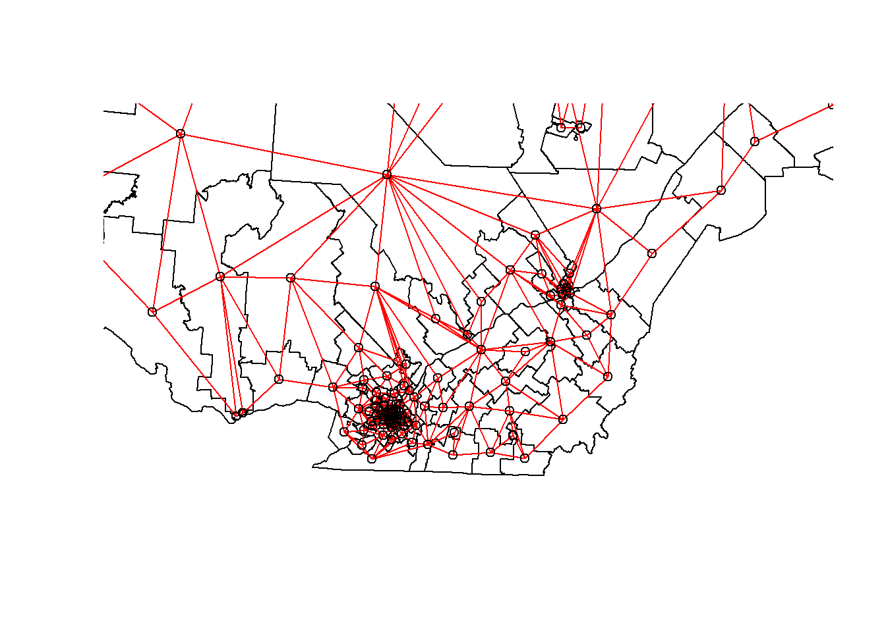

Statistiques spatiales en écologie, Partie 3
Philippe Marchand, Université du Québec en Abitibi-Témiscamingue
19 janvier 2021
Données aréales
Les données aréales sont des variables mesurées pour des régions de l’espace; ces régions sont définies par des polygones. Ce type de données est plus courant en sciences sociales, en géographie humaine et en épidémiologie, où les données sont souvent disponibles à l’échelle de divisions administratives du territoire.
Ce type de données apparaît aussi fréquemment dans la gestion des ressources naturelles. Par exemple, la carte suivante montre les unités d’aménagement forestier du Ministère de la Forêts, de la Faune et des Parcs du Québec.

Supposons qu’une certaine variable soit disponible au niveau de ces divisions du territoire. Comment pouvons-nous modéliser la corrélation spatiale entre les unités qui sont spatialement rapprochées?
Une option serait d’appliquer les méthodes géostatistiques vues précédemment, en calculant par exemple la distance entre les centres des polygones.
Une autre option, qui est davantage privilégiée pour les données aréales, consiste à définir un réseau où chaque région est connectée aux régions voisines par un lien. On suppose ensuite que les variables sont directement corrélées entre régions voisines seulement. (Notons toutefois que les corrélations directes entre voisins immédiats génèrent aussi des corrélations indirectes pour une chaîne de voisins.)
Dans ce type de modèle, la corrélation n’est pas nécessairement la même d’un lien à un autre. Dans ce cas, chaque lien du réseau peut être associé à un poids représentant son importance pour la corrélation spatiale. Nous représentons ces poids par une matrice \(W\) où \(w_{ij}\) est le poids du lien entre les régions \(i\) et \(j\). Une région n’a pas de lien avec elle-même, donc \(w_{ii} = 0\).
Un choix simple pour \(W\) consiste à assigner un poids égal à 1 si les régions sont voisines, sinon 0 (poids binaires).
Outre les divisions du territoire en polygones, un autre exemple de données aréales consiste en une grille où la variable est compilée pour chaque cellule de la grille. Dans ce cas, une cellule a généralement 4 ou 8 cellules voisines, selon que les diagonales soient incluses ou non.
Indice de Moran
Avant de discuter des modèles d’autocorrélation spatiale, nous présentons l’indice \(I\) de Moran, qui permet de tester si une corrélation significative est présente entre régions voisines.
L’indice de Moran est un coefficient d’autocorrélation spatiale des \(z\), pondéré par les poids \(w_{ij}\). Il prend donc des valeurs entre -1 et 1.
\[I = \frac{N}{\sum_i \sum_j w_{ij}} \frac{\sum_i \sum_j w_{ij} (z_i - \bar{z}) (z_j - \bar{z})}{\sum_i (z_i - \bar{z})^2}\]
Dans cette équation, nous reconnaissons l’expression d’une corrélation, soit le produit des écarts à la moyenne de deux variables \(z_i\) et \(z_j\), divisé par le produit de leurs écarts-types (qui est le même, donc on obtient la variance). La contribution de chaque paire \((i, j)\) est multipliée par son poids \(w_{ij}\) et le terme à gauche (le nombre de régions \(N\) divisé par la somme des poids) assure que le résultat soit borné entre -1 et 1.
Puisque la distribution de \(I\) est connue en l’absence d’autocorrélation spatiale, cette statistique permet de tester l’hypothèse nulle selon laquelle il n’y a pas de corrélation spatiale entre régions voisines.
Bien que nous ne verrons pas d’exemple dans ce cours-ci, l’indice de Moran peut aussi être appliqué aux données ponctuelles. Dans ce cas, on divise les paires de points en classes de distance et on calcule \(I\) pour chaque classe de distance; le poids \(w_{ij} = 1\) si la distance entre \(i\) et \(j\) se trouve dans la classe de distance voulue, 0 autrement.
Modèles d’autorégression spatiale
Rappelons-nous la formule pour une régression linéaire avec dépendance spatiale:
\[v = \beta_0 + \sum_i \beta_i u_i + z + \epsilon\]
où \(z\) est la portion de la variance résiduelle qui est spatialement corrélée.
Il existe deux principaux types de modèles autorégressifs pour représenter la dépendance spatiale de \(z\): l’autorégression conditionnelle (CAR) et l’autorégression simultanée (SAR).
Autorégression conditionnelle (CAR)
Dans le modèle d’autorégression conditionnelle, la valeur de \(z_i\) pour la région \(i\) suit une distribution normale: sa moyenne dépend de la valeur \(z_j\) des régions voisines, multipliée par le poids \(w_{ij}\) et un coefficient de corrélation \(\rho\); son écart-type \(\sigma_{z_i}\) peut varier d’une région à l’autre.
\[z_i \sim \text{N}\left(\sum_j \rho w_{ij} z_j,\sigma_{z_i} \right)\]
Dans ce modèle, si \(w_{ij}\) est une matrice binaire (0 pour les non-voisins, 1 pour les voisins), alors \(\rho\) est le coefficient de corrélation partielle entre régions voisines. Cela est semblable à un modèle autorégressif d’ordre 1 dans le contexte de séries temporelles, où le coefficient d’autorégression indique la corrélation partielle.
Autorégression simultanée (SAR)
Dans le modèle d’autorégression simultanée, la valeur de \(z_i\) est donnée directement par la somme de contributions des valeurs voisines \(z_j\), multipliées par \(\rho w_{ij}\), avec un résidu indépendant \(\nu_i\) d’écart-type \(\sigma_z\).
\[z_i = \sum_j \rho w_{ij} z_j + \nu_i\]
À première vue, cela ressemble à un modèle autorégressif temporel. Il existe cependant une différence conceptuelle importante. Pour les modèles temporels, l’influence causale est dirigée dans une seule direction: \(v(t-2)\) affecte \(v(t-1)\) qui affecte ensuite \(v(t)\). Pour un modèle spatial, chaque \(z_j\) qui affecte \(z_i\) dépend à son tour de \(z_i\). Ainsi, pour déterminer la distribution conjointe des \(z\), il faut résoudre simultanément (d’où le nom du modèle) un système d’équations.
Pour cette raison, même si ce modèle ressemble à la formule du modèle conditionnel (CAR), les solutions des deux modèles diffèrent et dans le cas du SAR, le coefficient \(\rho\) n’est pas directement égal à la corrélation partielle due à chaque région voisine.
Pour plus de détails sur les aspects mathématiques de ces modèles, vous pouvez consulter l’article de Ver Hoef et al. (2018) suggéré en référence.
Pour l’instant, nous considérerons les SAR et les CAR comme deux types de modèles possibles pour représenter une corrélation spatiale sur un réseau. Nous pouvons toujours ajuster plusieurs modèles et les comparer avec l’AIC pour choisir la meilleure forme de la corrélation ou la meilleure matrice de poids.
Les modèles CAR et SAR partagent un avantage sur les modèles géostatistiques au niveau de l’efficacité. Dans un modèle géostatistique, les corrélations spatiales sont définies entre chaque paire de points, même si elles deviennent négligeables lorsque la distance augmente. Pour un modèle CAR ou SAR, seules les régions voisines contribuent et la plupart des poids sont égaux à 0, ce qui rend ces modèles plus rapides à ajuster qu’un modèle géostatistique lorsque les données sont massives.
Analyse des données aréales dans R
Pour illustrer l’analyse de données aréales dans R, nous chargeons les packages sf (pour lire des données géospatiales), spdep (pour définir des réseaux spatiaux et calculer l’indice de Moran) et spatialreg (pour les modèles SAR et CAR).
library(sf)
library(spdep)
library(spatialreg)Nous utiliserons comme exemple un jeu de données qui présente une partie des résultats de l’élection provinciale de 2018 au Québec, avec des caractéristiques de la population de chaque circonscription. Ces données sont inclues dans un fichier de type shapefile (.shp), que nous pouvons lire avec la fonction read_sf du package sf.
elect2018 <- read_sf("data/elect2018.shp")
head(elect2018)## Simple feature collection with 6 features and 9 fields
## geometry type: MULTIPOLYGON
## dimension: XY
## bbox: xmin: 97879.03 ymin: 174515.3 xmax: 694261.1 ymax: 599757.1
## proj4string: +proj=lcc +lat_1=46 +lat_2=50 +lat_0=44 +lon_0=-70 +x_0=800000 +y_0=0 +datum=NAD83 +units=m +no_defs
## # A tibble: 6 x 10
## circ age_moy pct_frn pct_prp rev_med propCAQ propPQ propPLQ propQS
## <chr> <dbl> <dbl> <dbl> <int> <dbl> <dbl> <dbl> <dbl>
## 1 Abit~ 40.8 0.963 0.644 34518 42.7 19.5 18.8 15.7
## 2 Abit~ 42.2 0.987 0.735 33234 34.1 33.3 11.3 16.6
## 3 Acad~ 40.3 0.573 0.403 25391 16.5 9 53.8 13.8
## 4 Anjo~ 43.5 0.821 0.416 31275 28.9 14.7 39.1 14.5
## 5 Arge~ 43.3 0.858 0.766 31097 38.9 21.1 17.4 12.2
## 6 Arth~ 43.4 0.989 0.679 30082 61.8 9.4 11.4 12.6
## # ... with 1 more variable: geometry <MULTIPOLYGON [m]>Note: Le jeu de données est en fait composé de 4 fichiers avec les extensions .dbf, .prj, .shp et .shx, mais il suffit d’inscrire le nom du fichier .shp dans read_sf.
Les colonnes du jeu de données sont dans l’ordre:
- le nom de la circonscription électorale;
- quatre caractéristiques de la population (âge moyen, fraction de la population qui parle principalement français à la maison, fraction des ménages qui sont propriétaires de leur logement, revenu médian);
- quatre colonnes montrant la fraction des votes obtenues par les principaux partis (CAQ, PQ, PLQ, QS);
- une colonne
geometryqui contient l’objet géométrique (multipolygone) correspondant à la circonscription.
Pour illustrer une des variables sur une carte, nous appelons la fonction plot avec le nom de la colonne entre crochets et guillemets.
plot(elect2018["rev_med"])
Dans cet exemple, nous voulons modéliser la fraction des votes obtenue par la CAQ en fonction des caractéristiques de la population dans chaque circonscription et en tenant compte des corrélations spatiales entre circonscriptions voisines.
Définition du réseau de voisinage
La fonction poly2nb du package spdep définit un réseau de voisinage à partir de polygones. Le résultat vois est une liste de 125 éléments où chaque élément contient les indices des polygones voisins (limitrophes) d’un polygone donné.
vois <- poly2nb(elect2018)
vois[[1]]## [1] 2 37 63 88 101 117Ainsi, la première circonscription (Abitibi-Est) a 6 circonscriptions voisines, dont on peut trouver les noms ainsi:
elect2018$circ[vois[[1]]]## [1] "Abitibi-Ouest" "Gatineau"
## [3] "Laviolette-Saint-Maurice" "Pontiac"
## [5] "Rouyn-Noranda-Témiscamingue" "Ungava"Nous pouvons illustrer ce réseau en faisant l’extraction des coordonnées du centre de chaque circonscription, en créant une carte muette avec plot(elect2018["geometry"]), puis en ajoutant le réseau comme couche additionnelle avec plot(vois, add = TRUE, coords = coords).
coords <- st_centroid(elect2018) %>%
st_coordinates()
plot(elect2018["geometry"])
plot(vois, add = TRUE, col = "red", coords = coords)
On peut faire un “zoom” sur le sud du Québec en choisissant les limites xlim et ylim appropriées.
plot(elect2018["geometry"],
xlim = c(400000, 800000), ylim = c(100000, 500000))
plot(vois, add = TRUE, col = "red", coords = coords)
Il nous reste à ajouter des poids à chaque lien du réseau avec la fonction nb2listw. Le style de poids “B” correspond aux poids binaires, soit 1 pour la présence de lien et 0 pour l’absence de lien entre deux circonscriptions.
Une fois ces poids définis, nous pouvons vérifier avec le test de Moran s’il y a une autocorrélation significative des votes obtenus par la CAQ entre circonscriptions voisines.
poids <- nb2listw(vois, style = "B")
moran.test(elect2018$propCAQ, poids)##
## Moran I test under randomisation
##
## data: elect2018$propCAQ
## weights: poids
##
## Moran I statistic standard deviate = 13.148, p-value < 2.2e-16
## alternative hypothesis: greater
## sample estimates:
## Moran I statistic Expectation Variance
## 0.680607768 -0.008064516 0.002743472La valeur de \(I = 0.68\) est très significative à en juger par la valeur \(p\) du test.
Vérifions si la corrélation spatiale persiste après avoir tenu compte des quatre caractéristiques de la population, donc en inspectant les résidus d’un modèle linéaire incluant ces quatre prédicteurs.
elect_lm <- lm(propCAQ ~ age_moy + pct_frn + pct_prp + rev_med, data = elect2018)
summary(elect_lm)##
## Call:
## lm(formula = propCAQ ~ age_moy + pct_frn + pct_prp + rev_med,
## data = elect2018)
##
## Residuals:
## Min 1Q Median 3Q Max
## -30.9890 -4.4878 0.0562 6.2653 25.8146
##
## Coefficients:
## Estimate Std. Error t value Pr(>|t|)
## (Intercept) 1.354e+01 1.836e+01 0.737 0.463
## age_moy -9.170e-01 3.855e-01 -2.378 0.019 *
## pct_frn 4.588e+01 5.202e+00 8.820 1.09e-14 ***
## pct_prp 3.582e+01 6.527e+00 5.488 2.31e-07 ***
## rev_med -2.624e-05 2.465e-04 -0.106 0.915
## ---
## Signif. codes: 0 '***' 0.001 '**' 0.01 '*' 0.05 '.' 0.1 ' ' 1
##
## Residual standard error: 9.409 on 120 degrees of freedom
## Multiple R-squared: 0.6096, Adjusted R-squared: 0.5965
## F-statistic: 46.84 on 4 and 120 DF, p-value: < 2.2e-16moran.test(residuals(elect_lm), poids)##
## Moran I test under randomisation
##
## data: residuals(elect_lm)
## weights: poids
##
## Moran I statistic standard deviate = 6.7047, p-value = 1.009e-11
## alternative hypothesis: greater
## sample estimates:
## Moran I statistic Expectation Variance
## 0.340083290 -0.008064516 0.002696300L’indice de Moran a diminué mais demeure significatif, donc une partie de la corrélation précédente était induite par ces prédicteurs, mais il reste une corrélation spatiale due à d’autres facteurs.
Modèles d’autorégression spatiale
Finalement, nous ajustons des modèles SAR et CAR à ces données avec la fonction spautolm (spatial autoregressive linear model) de spatialreg. Voici le code pour un modèle SAR incluant l’effet des même quatre prédicteurs.
elect_sar <- spautolm(propCAQ ~ age_moy + pct_frn + pct_prp + rev_med,
data = elect2018, listw = poids)
summary(elect_sar)##
## Call: spautolm(formula = propCAQ ~ age_moy + pct_frn + pct_prp + rev_med,
## data = elect2018, listw = poids)
##
## Residuals:
## Min 1Q Median 3Q Max
## -23.08342 -4.10573 0.24274 4.29941 23.08245
##
## Coefficients:
## Estimate Std. Error z value Pr(>|z|)
## (Intercept) 15.09421119 16.52357745 0.9135 0.36098
## age_moy -0.70481703 0.32204139 -2.1886 0.02863
## pct_frn 39.09375061 5.43653962 7.1909 6.435e-13
## pct_prp 14.32329345 6.96492611 2.0565 0.03974
## rev_med 0.00016730 0.00023209 0.7208 0.47101
##
## Lambda: 0.12887 LR test value: 42.274 p-value: 7.9339e-11
## Numerical Hessian standard error of lambda: 0.012069
##
## Log likelihood: -433.8862
## ML residual variance (sigma squared): 53.028, (sigma: 7.282)
## Number of observations: 125
## Number of parameters estimated: 7
## AIC: 881.77La valeur donnée par Lambda dans le sommaire correspond au coefficient \(\rho\) dans notre description du modèle. Le test du rapport de vraisemblance (LR test) confirme que cette corrélation spatiale résiduelle (après avoir tenu compte de l’effet des prédicteurs) est significative.
Les effets estimés pour les prédicteurs sont semblables à ceux du modèle linéaire sans corrélation spatiale. Les effets de l’âge moyen, de la fraction de francophones et la fraction de propriétaires demeurent significatifs, bien que leur magnitude ait un peu diminué.
Pour évaluer un modèle CAR plutôt que SAR, nous devons spécifier family = "CAR".
elect_car <- spautolm(propCAQ ~ age_moy + pct_frn + pct_prp + rev_med,
data = elect2018, listw = poids, family = "CAR")
summary(elect_car)##
## Call: spautolm(formula = propCAQ ~ age_moy + pct_frn + pct_prp + rev_med,
## data = elect2018, listw = poids, family = "CAR")
##
## Residuals:
## Min 1Q Median 3Q Max
## -21.73315 -4.24623 -0.24369 3.44228 23.43749
##
## Coefficients:
## Estimate Std. Error z value Pr(>|z|)
## (Intercept) 16.57164696 16.84155327 0.9840 0.325128
## age_moy -0.79072151 0.32972225 -2.3981 0.016478
## pct_frn 38.99116707 5.43667482 7.1719 7.399e-13
## pct_prp 17.98557474 6.80333470 2.6436 0.008202
## rev_med 0.00012639 0.00023106 0.5470 0.584364
##
## Lambda: 0.15517 LR test value: 40.532 p-value: 1.9344e-10
## Numerical Hessian standard error of lambda: 0.0026868
##
## Log likelihood: -434.7573
## ML residual variance (sigma squared): 53.9, (sigma: 7.3416)
## Number of observations: 125
## Number of parameters estimated: 7
## AIC: 883.51Pour un modèle CAR avec des poids binaires, la valeur de Lambda (que nous avions appelé \(\rho\)) donne directement le coefficient de corrélation partielle entre circonscriptions voisines. Notez que l’AIC ici est légèrement supérieur au modèle SAR, donc ce dernier donnait un meilleur ajustement.
Exercice
Le jeu de données rls_covid, en format shapefile, contient des données sur les cas de COVID-19 détectés, le nombre de cas par 1000 personnes (taux_1k) et la densité de population (dens_pop) dans chacun des réseaux locaux de service de santé (RLS) du Québec. (Source: Données téléchargées de l’Institut national de santé publique du Québec en date du 17 janvier 2021.)
rls_covid <- read_sf("data/rls_covid.shp")
head(rls_covid)## Simple feature collection with 6 features and 5 fields
## geometry type: MULTIPOLYGON
## dimension: XY
## bbox: xmin: 785111.2 ymin: 341057.8 xmax: 979941.5 ymax: 541112.7
## proj4string: +proj=lcc +lat_1=46 +lat_2=50 +lat_0=44 +lon_0=-70 +x_0=800000 +y_0=0 +datum=NAD83 +units=m +no_defs
## # A tibble: 6 x 6
## RLS_code RLS_nom cas taux_1k dens_pop geometry
## <chr> <chr> <dbl> <dbl> <dbl> <MULTIPOLYGON [m]>
## 1 0111 RLS de Ka~ 152 7.34 6.76 (((827028.3 412772.4, 827034.9 412~
## 2 0112 RLS de Ri~ 256 7.34 19.6 (((855905 452116.9, 855784.2 45198~
## 3 0113 RLS de Té~ 81 4.26 4.69 (((911829.4 441311.2, 912116.1 441~
## 4 0114 RLS des B~ 28 3.3 5.35 (((879249.6 471975.6, 879234.3 471~
## 5 0115 RLS de Ri~ 576 9.96 15.5 (((917748.1 503148.7, 917987.2 502~
## 6 0116 RLS de La~ 76 4.24 5.53 (((951316 523499.3, 952553.4 52248~Ajustez un modèle linéaire du nombre de cas par 1000 en fonction de la densité de population (il est suggéré d’appliquer une transformation logarithmique à cette dernière). Vérifiez si les résidus du modèle sont corrélés entre RLS limitrophes avec un test de Moran, puis modélisez les mêmes données avec un modèle autorégressif conditionnel.
Référence
Ver Hoef, J.M., Peterson, E.E., Hooten, M.B., Hanks, E.M. et Fortin, M.-J. (2018) Spatial autoregressive models for statistical inference from ecological data. Ecological Monographs 88: 36-59.